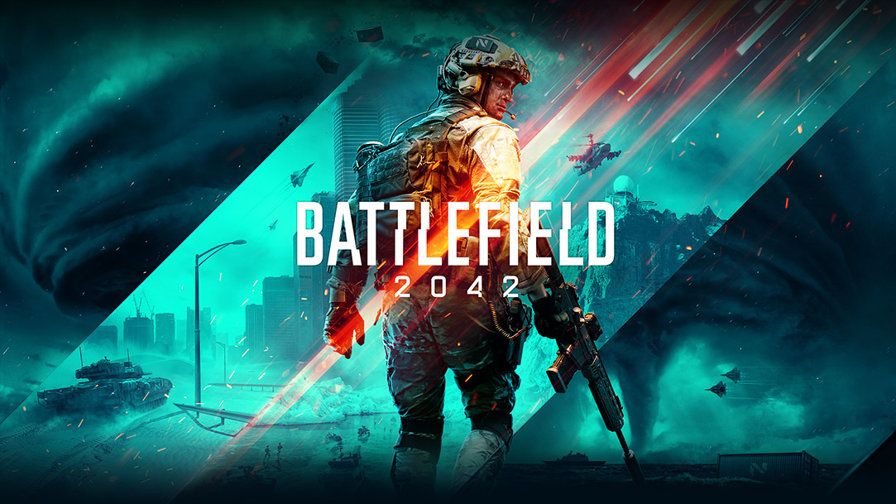

Ação
Street Fighter
Street Fighter é um icônico jogo de luta que cativa jogadores de todas as idades desde seu lançamento em 1987 pela Capcom. Com uma ampla variedade de personagens, cada um com seu próprio estilo de luta e conjunto de habilidades únicas, o jogo desafia os jogadores a dominarem técnicas de combate complexas enquanto enfrentam adversários em batalhas eletrizantes. Ao longo dos anos, a franquia evoluiu, apresentando gráficos impressionantes, mecânicas de jogo refinadas e uma rica história de fundo para os personagens. Com torneios competitivos em todo o mundo e uma base de fãs dedicada, Street Fighter continua a ser uma parte fundamental da cultura dos videogames.
Uncharted
Uncharted é uma aclamada série de jogos de ação e aventura desenvolvida pela Naughty Dog, que segue as aventuras do carismático caçador de tesouros Nathan Drake. Com narrativas envolventes, personagens carismáticos e cenários exóticos, os jogadores são levados a emocionantes expedições em busca de tesouros perdidos e segredos antigos. A série é conhecida por sua jogabilidade cinematográfica, combinando momentos de ação intensa, quebra-cabeças desafiadores e sequências de plataforma emocionantes. Ao longo dos anos, Uncharted se tornou uma das franquias mais populares e influentes da indústria de videogames, conquistando tanto crítica quanto público com sua mistura única de história, jogabilidade e produção de alta qualidade.
Devil May Cry
Devil May Cry é uma franquia de jogos de ação desenvolvida pela Capcom, com destaque para seu protagonista icônico, Dante. Conhecido por seu estilo de combate ágil e sua atitude irreverente, Dante é um caçador de demônios meio-humano e meio-demônio que enfrenta ameaças sobrenaturais com suas habilidades excepcionais e sua espada lendária, a Rebellion. A série é famosa por sua ação frenética, combos estilosos e chefes desafiadores, além de uma narrativa cheia de reviravoltas e elementos sobrenaturais. Ao longo dos jogos, Dante se tornou um ícone dos videogames, conquistando fãs com sua personalidade carismática e seu senso de humor peculiar, garantindo assim seu lugar como um dos personagens mais memoráveis e adorados da história dos jogos eletrônicos.
Battlefield
Battlefield é uma renomada série de jogos de tiro em primeira pessoa desenvolvida pela DICE e publicada pela Electronic Arts, conhecida por sua ênfase no realismo e na escala épica dos confrontos militares. Ambientados em diversos cenários históricos e contemporâneos, os jogos da franquia oferecem uma experiência imersiva de combate, com mapas vastos, veículos de guerra e uma variedade de classes de soldados para os jogadores escolherem. Com modos de jogo que vão desde batalhas massivas entre equipes até operações especiais mais táticas, Battlefield proporciona uma ampla gama de experiências de jogo para os fãs de ação e estratégia. A série é conhecida por seus gráficos impressionantes, jogabilidade dinâmica e momentos intensos de combate, tornando-se uma das franquias mais populares e duradouras do gênero de tiro em primeira pessoa.